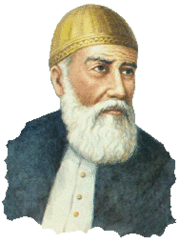

FUZULİ
Asıl adının Mehmet, babasının adının Süleyman olduğu bilinmekle beraber hangi tarihte ve nerede doğduğu hakkında kesin bilgi yoktur. Mevcut kaynaklar onun 1495’te Bağdat civarında doğduğunu, 1556’da vefat ettiğini kaydetmektedir. Bilindiği kadarıyla onun hayatı Kerbelâ, Hille, Necefve Bağdat’ta geçmiştir. Arapça ve Farsçayı bu dillerde kusursuz eser yazabilecek ve şiir söyleyebilecek derecede öğrenmiştir. Fuzûlî, Kanunî Bağdat’ı fethedince, padişaha kasideler takdim etmiş, ayrıca Bağdat seferine katılan şairlerden Hayalî Bey ve Taşlıcalı Yahya Bey’le de tanışmıştır.
Edebî Kişiliği
• Kanunî daha Bağdat’tan ayrılmadan Fuzûlî’ye maaş bağlanacağına dair söz verilmiş, fakat sonradan bu maaş gündelik 9 akçe gibi onun azımsadığı bir miktardan ibaret kalmış, bunu üzerine şair ünlü “Şikâyetnâme”sini kaleme alarak memnuniyetsizliğini dile getirmiştir.
• Âlim bir şair olan Fuzûlî şiir hakkındaki görüşlerini Türkçe divanının önsözünde “İlimsiz şiir temelsiz duvar gibidir, temelsiz duvar yıkılıp gider.” sözleriyle dile getirmiştir.
• Fuzûlî’ye göre şiir, insanı yücelten ilâhî bir hediyedir.
• Güzellik ve aşk anlayışıyla birlikte devrinin ruh ve bedenle ilgili düşüncelerini “Sıhhat u Maraz”da, tasavvufî nitelikte nasihatçiliğini “Rind ü Zâhid”de, tasavvuf felsefesiyle dünya ve hayat görüşünü ise başta “Leyla vü Mecnun” mesnevisi olmak üzere divanlarındaki çeşitli şiirlerde ortaya koymuştur.
• Fuzûlî aşkı, ıstırabı, dünyevî zevk ve zenginliklerin boşluğunu ve ölüm düşüncesini olağanüstü bir lirizm ve sanat gücüyle ifade etmiştir. Bu yönüyle o, aşk ve ıstırap şairidir.
• Kasidelerinde ağır ve külfetli olan dili gazellerinde ve Leyla vü Mecnun mesnevisinde sade, tabii ve yapmacıksız bir özellik gösterir. Bu sadeliği içinde dili sanatkârane kullanan Fuzûlî, kelime tekrarlarından ve zengin ses unsurlarından ustalıkla yararlanmıştır.
• Fuzûlî, gazellerindeki derinlik, samimiyet, hissîlik ve lirizme mukabil kasidelerinde fikir ve söz oyunlarına çok başvurur.
• Kasidelerinde söz sanatları, gazellerinde mâna sanatları hâkimdir.
• Kasideleri, bütün yapı taşları görünen mimari eser gibi dört başı mâmur bir plastik güzelliğe sahiptir.
• Fuzûlî kasideler de yazmakla birlikte en çok, gazel türünde şiirler yazmıştır.
• O, aşk duygularının en iyi, gazel tarzıyla söyleneceğine inanmaktadır.
• Manzum ve mensur birçok eseri vardır.
• Fuzûlî, İslâm kültür ve edebiyatının üç büyük dili olan Arapça, Farsça ve Türkçeye hâkimdir.
• Bu üç dille de şiirler yazmış, şiirleri ayrı ayrı divanlarda toplamıştır.
Eserleri:
Arapça Divan, Farsça Divan, Türkçe Divan, Leylâ vü Mecnûn, Beng ü Bade, Hadîs-i Erbain Tercümesi, Sohbetü’l-Esmâr, Hadîkatü’s-Süedâ, Mektuplar, Heft-câm (Sâkinâme), Rind ü Zâhid, Sıhhat u Maraz, Enîsü’l-Kalb (Kaside)